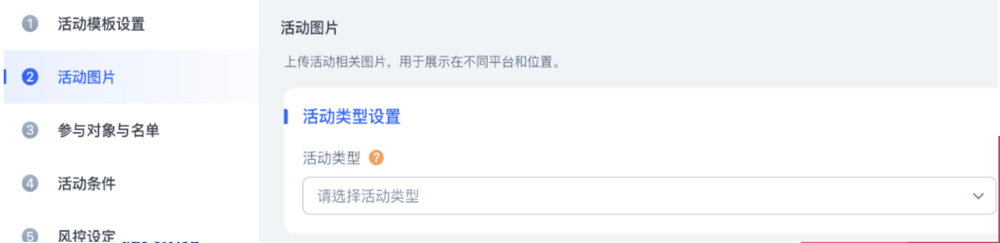
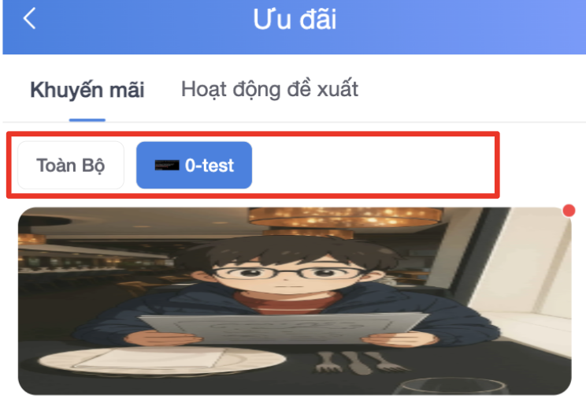

活动新增的设置步骤框架说明与活动基础条件设置。
| 区块名称 | 设置说明 |
|---|---|
| 1. 步骤设置 | 显示活动建立的完整流程步骤（如：活动设置、活动图片、参与对象等）。 |
| 2. 参数条件设置 | 根据选择的模板，显示对应的参数输入与条件设定区域。 |
| 3. 切换按钮 | 包含：上一步、下一步与退出按钮。 |
| 配置区块 | 设定项 | 详细功能描述与操作说明 |
|---|---|---|
| a.1. | 活动编号 | 每个活动独一无二的ID。 |
| a.2. | 模板类型 | 定义请参考下表 a.2.1。 |
| a.2.1. | 模板类型说明 |
a. 系统有专题页：该模板有预设图片，并且也有在前端列表排序。
(注：此项选择对应前台的类别页面。请参考右图红色区域)


b. 系统无专题页：该模板没有系统自带的图片。需要在活动图片步骤上传及设定活动类别。
c. 自定义：仅会出现：活动设置、活动图片、参与对象与名单、提交预览。
|
| a.2.2. | 活动模板选择 | 下拉选择设定活动模板跟模式。 |
| a.3. | 时间设定 |
展示时间：适用于活动预热的开始到结束的展示时间。 进行时间：活动开始的时间周期。 长期展示：活动没有结束时间（无勾选特定区段时）。 |
| a.4. | 活动类型设置 | |
| a.4.1. | 活动类型 | 决定该活动是否运作（开关）。 |
| a.4.2. | 活动币种 | 设置其中一个活动币种。 |
| a.5. | 前台展示名称 | 前台名称：活动在前台展示给玩家看的名称。 |
Framework description for activity creation steps and basic activity condition settings.
| Section Name | Setup Description |
|---|---|
| 1. Step Settings | Displays the complete flow of activity creation (e.g., Settings, Images, Participants). |
| 2. Parameter Condition Settings | Displays input fields and condition settings specific to the selected template. |
| 3. Switch Buttons | Includes: Previous, Next, and Exit buttons. |
| Configuration Section | Setting Item | Detailed Functional Description & Instructions |
|---|---|---|
| a.1. | Activity ID | A unique ID for each activity. |
| a.2. | Template Type | Refer to table a.2.1 for definitions. |
| a.2.1. | Template Type Desc |
a. System with Feature Page: Includes a default image and predefined
frontend sorting.
(Note: Corresponds to the frontend Category Page. Refer to red area)
b. System without Feature Page: No default image. Manual upload
required in the Image step.
c. Custom: Includes only: Activity Settings, Images, Participants, and
Preview submission.
|
| a.2.2. | Template Selection | Dropdown selection to set activity template and mode. |
| a.3. | Time Settings |
Display Time: Full visibility cycle from warm-up to end. Execution Time: The actual period players can participate. Long-term: Activity remains active with no fixed end time. |
| a.4. | Activity Type Settings | |
| a.4.1. | Activity Type | Toggle to enable/disable operation (Switch). |
| a.4.2. | Activity Currency | Set the base currency for the activity. |
| a.5. | Frontend Display Name | Display Name: The name visible to players on the frontend. |
Mô tả khung các bước tạo hoạt động mới và thiết lập các điều kiện cơ bản của hoạt động.
| Tên khu vực | Mô tả thiết lập |
|---|---|
| 1. Thiết lập bước | Hiển thị quy trình đầy đủ của việc tạo hoạt động (ví dụ: Thiết lập, Hình ảnh, Đối tượng). |
| 2. Thiết lập thông số điều kiện | Hiển thị các trường nhập liệu và thiết lập điều kiện cụ thể cho mẫu đã chọn. |
| 3. Nút chuyển đổi | Bao gồm: Nút Trước, Tiếp theo và Thoát. |
| Khu vực cấu hình | Mục cài đặt | Mô tả chức năng & hướng dẫn thao tác chi tiết |
|---|---|---|
| a.1. | ID hoạt động | ID duy nhất cho mỗi hoạt động. |
| a.2. | Loại mẫu | Xem bảng a.2.1 để biết định nghĩa. |
| a.2.1. | Mô tả loại mẫu |
a. Hệ thống có trang chủ đề: Mẫu có hình ảnh mặc định và thứ tự sắp xếp
giao diện.
(Lưu ý: Tương ứng với Trang Danh mục ở giao diện. Tham khảo vùng màu đỏ)
b. Hệ thống không có trang chủ đề: Không có hình ảnh mặc định. Yêu cầu
tải lên thủ công trong bước Hình ảnh.
c. Tùy chỉnh: Chỉ bao gồm: Thiết lập hoạt động, Hình ảnh, Đối tượng và
Gửi xem trước.
|
| a.2.2. | Chọn mẫu hoạt động | Lựa chọn từ danh sách để thiết lập mẫu và chế độ hoạt động. |
| a.3. | Thiết lập thời gian |
Thời gian hiển thị: Chu kỳ hiển thị đầy đủ từ khi khởi động đến khi kết
thúc. Thời gian diễn ra: Khoảng thời gian thực tế người chơi có thể tham gia. Hiển thị dài hạn: Hoạt động duy trì trạng thái mở và không có thời gian kết thúc. |
| a.4. | Thiết lập loại hoạt động | |
| a.4.1. | Loại hoạt động | Công tắc quyết định hoạt động có vận hành hay không. |
| a.4.2. | Tiền tệ hoạt động | Chọn loại tiền tệ cơ sở cho hoạt động. |
| a.5. | Tên hiển thị giao diện | Tên hiển thị: Tên hiển thị cho người chơi ở giao diện người dùng. |